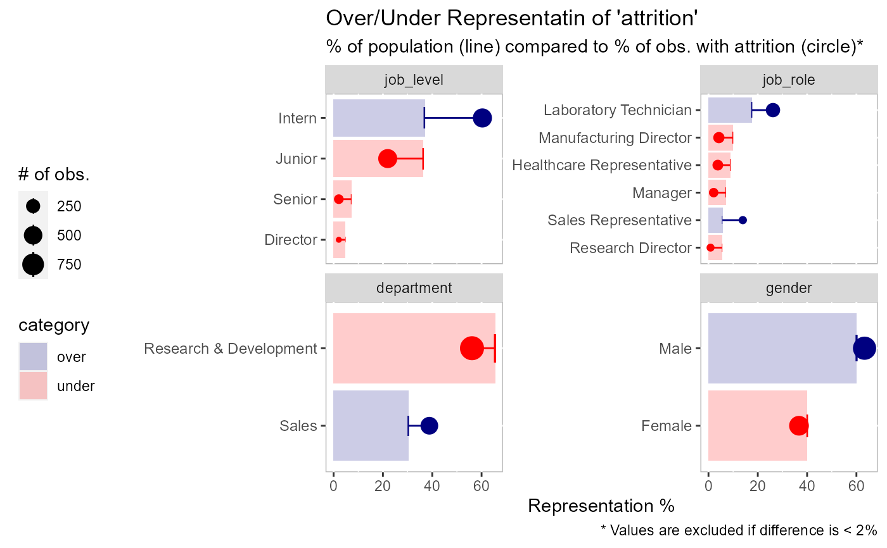
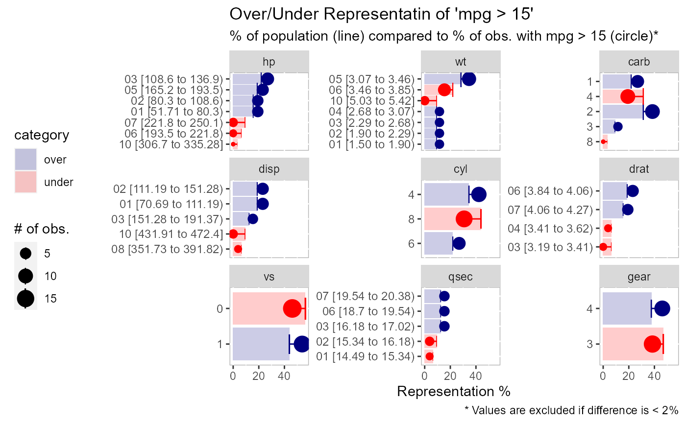
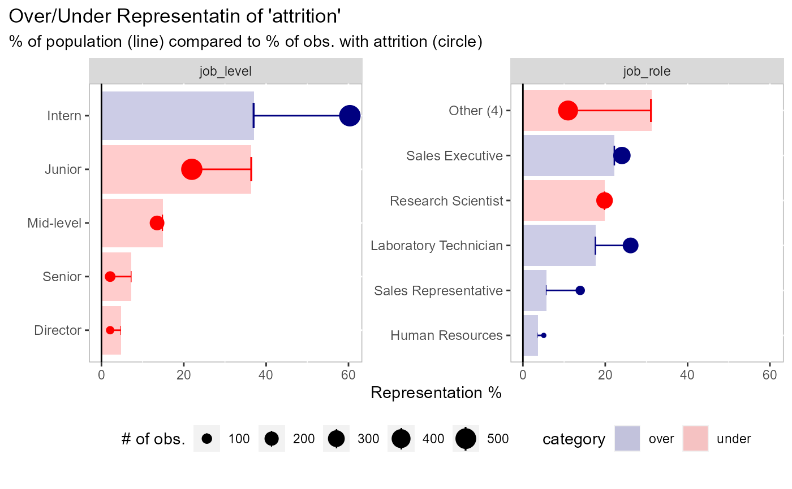

R/plot-expected-proportions.R
plot_expected_proportions.RdIdeal for a 0/1 dichotomous variable.
plot_expected_proportions( df, dv, ..., trunc_length = 100, sort_by = c("expected", "actual"), threshold = 0.02, return_data = FALSE, n_field = 9, color_over = "navyblue", color_under = "red" )
| df | data to be analyzed |
|---|---|
| dv | dependent variable |
| ... | Arguments passed on to
|
| trunc_length | length to shorten y-axis labels |
| sort_by | should data be sorted by expected or actual percentages |
| threshold | the cut-off (percentage difference) between actual and
expected values. This allows the chart to focus on the bigger changes.
Use |
| return_data | if TRUE will return a data frame instead of a plot |
| n_field | the max number of facets to show. The fields are sorted in descending order by those that have the most change (the 'field_delta' column). |
| color_over | color name/hex code for values that are over-represented |
| color_under | color name/hex code for values that are under-represented |
# sorted by the expected representation (default) plot_expected_proportions( df = employee_attrition[, 1:5], dv = attrition )# sorted by the actual representation plot_expected_proportions( df = employee_attrition[, 1:5], dv = attrition, sort_by = "actual" )# you can return the dataframe if you want plot_expected_proportions( df = employee_attrition[, 1:5], dv = attrition, return_data = TRUE )#> # A tibble: 14 x 10 #> field value n total expected actual delta abs_delta field_delta category #> <fct> <chr> <int> <int> <dbl> <dbl> <dbl> <dbl> <dbl> <chr> #> 1 job_~ Dire~ 69 5 4.69 2.11 -2.58 2.58 46.8 under #> 2 job_~ Rese~ 80 2 5.44 0.844 -4.60 4.60 40.4 under #> 3 job_~ Sale~ 83 33 5.65 13.9 8.28 8.28 40.4 over #> 4 job_~ Mana~ 102 5 6.94 2.11 -4.83 4.83 40.4 under #> 5 job_~ Seni~ 106 5 7.21 2.11 -5.10 5.10 46.8 under #> 6 job_~ Heal~ 131 9 8.91 3.80 -5.11 5.11 40.4 under #> 7 job_~ Manu~ 145 10 9.86 4.22 -5.64 5.64 40.4 under #> 8 job_~ Labo~ 259 62 17.6 26.2 8.54 8.54 40.4 over #> 9 depa~ Sales 446 92 30.3 38.8 8.48 8.48 18.5 over #> 10 job_~ Juni~ 534 52 36.3 21.9 -14.4 14.4 46.8 under #> 11 job_~ Inte~ 543 143 36.9 60.3 23.4 23.4 46.8 over #> 12 gend~ Fema~ 588 87 40 36.7 -3.29 3.29 6.58 under #> 13 gend~ Male 882 150 60 63.3 3.29 3.29 6.58 over #> 14 depa~ Rese~ 961 133 65.4 56.1 -9.26 9.26 18.5 under# an example with more parameters plot_expected_proportions( df = employee_attrition[, 1:5], # data to use dv = attrition, # can be a field name or an evaluation n_cat = 5, # collapse field values into 5 categories, all else in "Other" n_field = 2, # keep the first 2 facets threshold = NULL # keep all values )